Using Templates¶
Templates can be an effective way of having basic reports available to users of the system with the primary purpose of serving as a medium to create quick ad-hoc reports. This will be a guide for users trying to manipulate templates from both a “Quick Edit” and “Save As” perspective. The level of customization provided to users is up to the discretion of the System or Tenant level administrators.
Note
This page is currently under construction. Please feel free to use the information provided on this page while we continue to refine it for your use.
Customizing Templates through Quick Edit¶
In order to start working with a template, the user must either have Quick Edit access to a report, or have access to manipulate reports within the Template tab. For this example, we will select a report from the Templates tab.
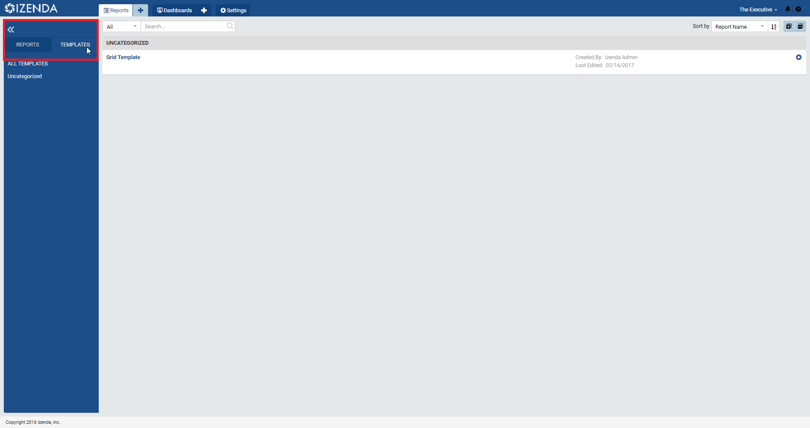Fig. 402 Templates tab
With the report opened into the full one page report viewer, select the “Quick Edit” option under the “Edit” drop down at the top of the screen to take the report into Quick Edit mode and start making adjustments.
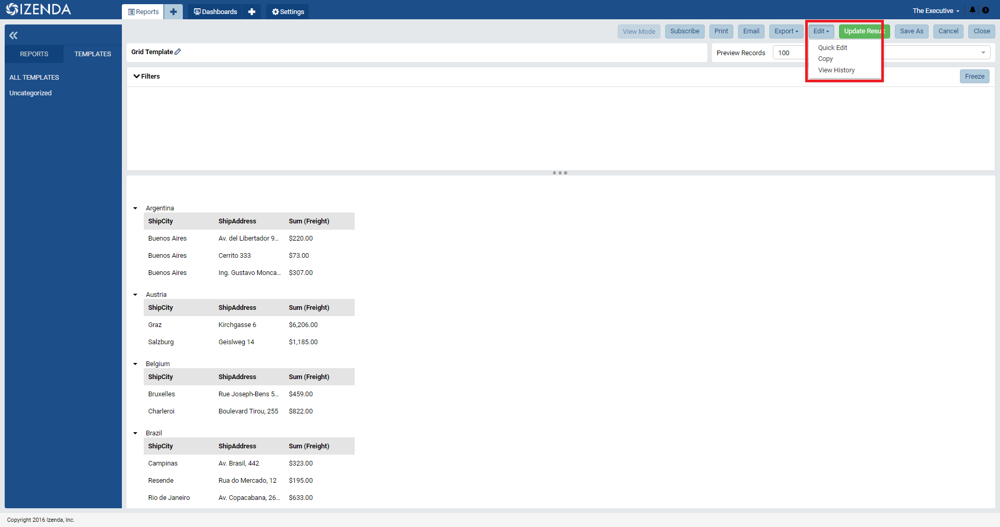Fig. 403 Edit > Quick Edit
From within this mode, users can begin making changes to the report parts contained with the report. This includes adding, removing, or modifying filters, fields, or formatting while only being restricted to data sources that had been allocated during the report design process. To begin editing report parts, use the menu at the top of the desired report part to flip it into configuration mode
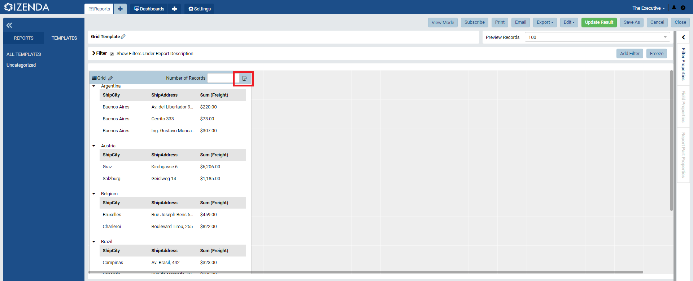Fig. 404 Switch into Configuration mode
First, we will adjust the field order in order to get a new view on the data within this grid.
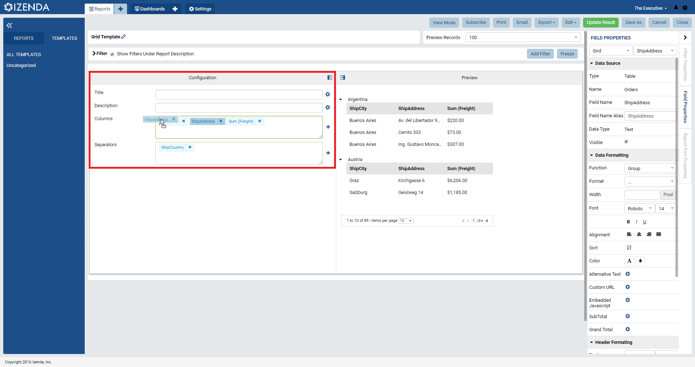Fig. 405 Changing field order
Then, we can add a field from the preset data sources in order to quickly expand this grid through the plus button next to the drop boxes.
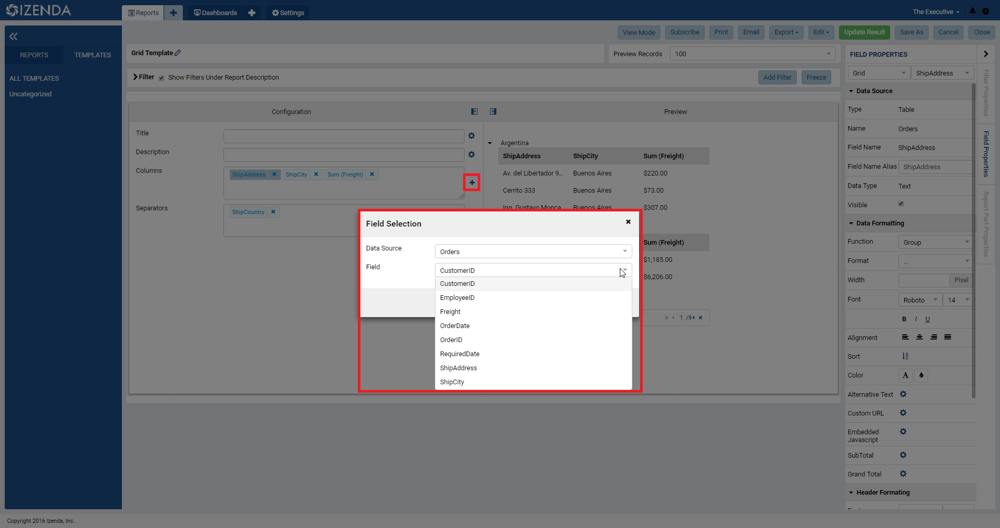Fig. 406 Adding a field
Field names can be changed through the field alias option, fonts can be adjusted, and various other features can be utilized if granted the proper permission to employ them. This would include setting up drilldown behavior to sub-reports or adding custom URLs or JavaScript to a given field.
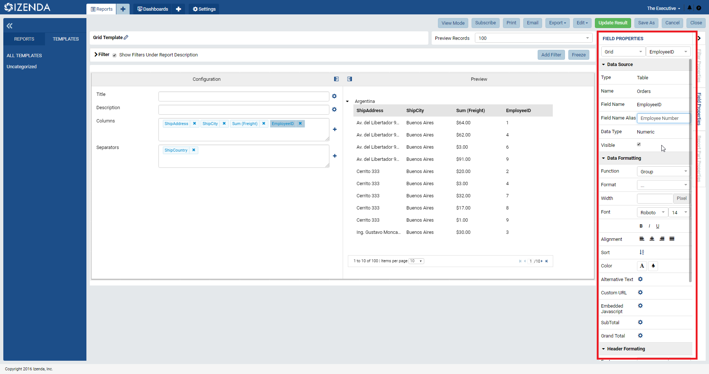Fig. 407 Field Name Alias
For filters, we can add a new filter utilizing a similar mechanic of selecting from available data sources. In this case, however, the desired field to be filtered on will be chosen through a dropdown menu on the filter itself.
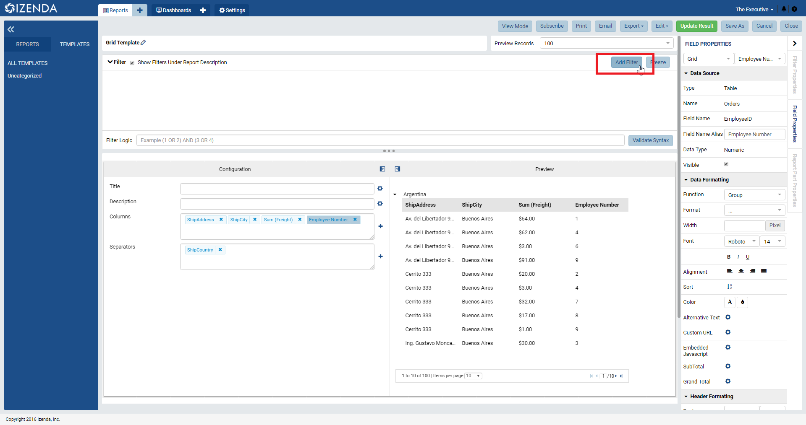Fig. 408 Add Filter button
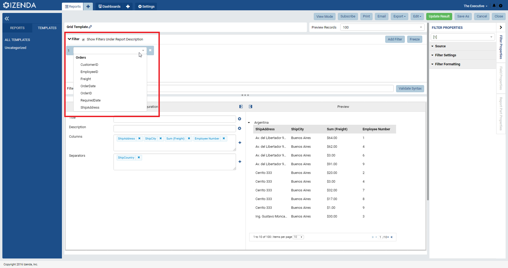Fig. 409 Selecting Filter Field
Once in place, we can use the Filter properties panel on the right side of the screen in order to start making customizations to the filter. This includes selecting a filter operator and a selection mechanism.
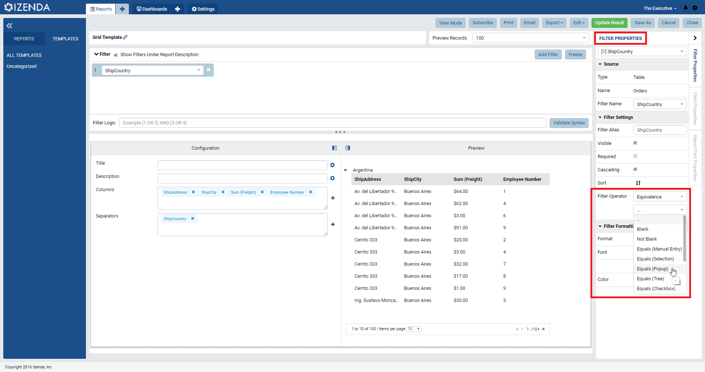Fig. 410 Choosing Filter Operator
The user can also make adjustments to the number of Preview Records being pulled for a given report part.
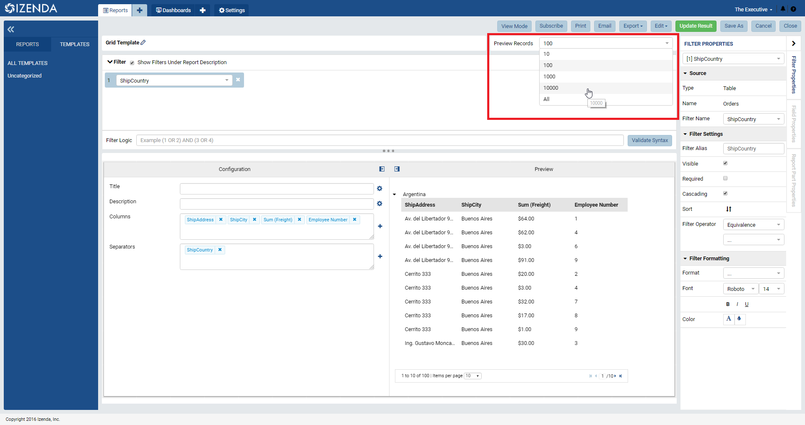Fig. 411 Choosing Preview Records
Finally, users can make adjustments to the entire report part through the Report Part Properties panel on the right. This is where users can make cosmetic changes like altering the layout of labels or adding borders or grid lines, adding a legend or showing value labels, or even adding data refresh intervals to the entire report part.
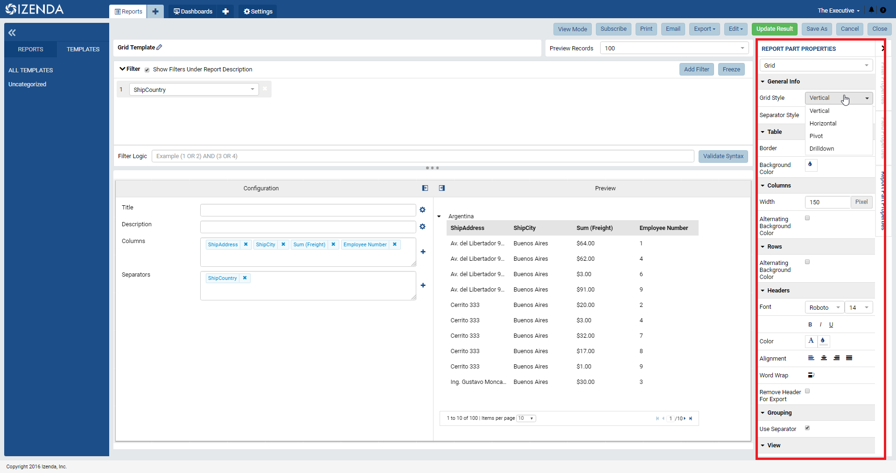Fig. 412 Report Part Properties panel
Once all of the desired alterations have been made to the report, the user can then use the Save As functionality in order to save the customized report into their own allocated categories for their specific use cases.
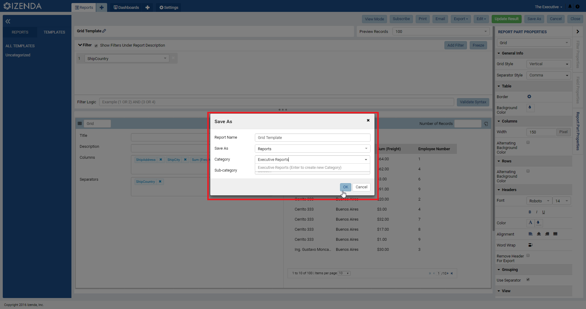Fig. 413 Save As pop-up
Customizing Templates with Save As Access Rights¶
With Save As access to a report or template, users can follow the same steps as listed above. The only difference for this would be that the user could also navigate through all of the other tabs associated with the report design process. This means that a user can select or remove data sources, manage custom formatting for exporting, set up access rights to other internal users, and set up scheduled instances of the report to be distributed.
This can be done because with Save As access, users can basically fully customize a report without needing to worry about disturbing the underlying integrity of the base report. From a template perspective, this gives users more opportunity to personalize their own reports through an easy to use framework of a pre-constructed template report.
For more details on some of the functionality that would be available during the Save As design process, please take a look at our Report Design Videos or Report Design Guide for more details.